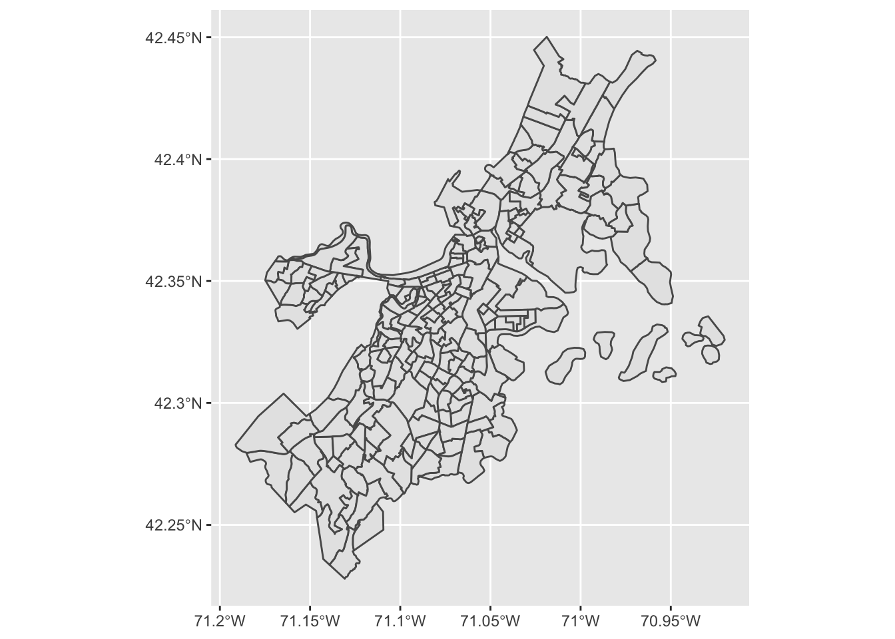
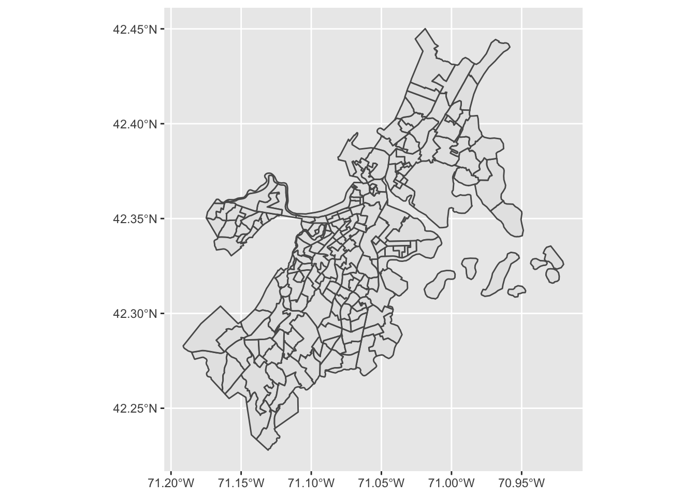

Chapter 26 Spatial Analysis
In the very beginning of the book we discussed some of the benefits of administrative data. One of the benefits mentioned is that administrative data are inherently spatial. Most data tend to be spatial in nature. This is because most events happen at a physical place. In the context of administrative data, we know that all data recorded at that level must fall within the municipal boundaries. Often we know the location within the municipality to a much finer scale—i.e. the block group, the voting ward, or even the exact point location.
Identifying whether or not your data is spatial is easiest when there are geographic components present such as latitude and longitude. However, your data can also be spatial even if it isn’t explicitly stated. Some things you can keep an eye out for are things like neighborhood, towns, county, etc. as these are location specific. It is likely that you will be performing analyses rooted in space and accounting for things such as counties but perhaps without using any geospatial techniques.
In this section we will go over the very basics of geospatial analysis.
26.1 Types of spatial data
Within the field of Geographic Information Systems (GIS) there are two general umbrellas in which data fall under. These are vector and raster data.
Vector data is what you will find yourself working with most frequently. Most simply put they are “points, lines, and polygons.” The basis of vector data is the coordinate point. Just like the scatter plots we have built, each coordinate point is a combination of an x and y value (longitude and latitude respectively). This combination of x and y will tell us where something is. By combining two or more points we can trace along a path—think of the connect the dots diagrams you would do at restaurants as a kid—and create line segments. If, however, at any point these lines close, you now have a polygon.
The other umbrella of data is known as raster data. Raster data are to deal with more complex data that cannot easily be captured by a single point. Rasters are used to “represent spatially continuous phenomenon.”76 Raster analysis is done to evaluate things like changing vegetation, elevation and slope modeling, analysing reflective surfaces, among much more. Raster analysis typically relies on satellite imagery or LiDAR laser point cloud data. Raster analysis is an extremely complex topic and requires devoted attention. As such, we will not cover it in this book. But, know that it exists and is out there!

26.2 Working with spatial data
Working with spatial data is made rather straightforward by the sf package.
sf is shorthand for simple features. sf let’s us represent physical objects or phenomena in that occur the real world through data. It is built upon an international standard that “describes how such objects can be stored in and retrieved from databases, and which geometrical operations should be defined for them.” (sf vinette, 1).
All simple features are representation of vector data. That is that they are composed of points. These points are usually represented two-dimensionally with longitude and latitude (x and y). We can associate a third dimension of altitude if so desired to extend to three dimensions: longitude, latitude, and altitude (x, y, & z). In our cases, however, this will not be used.
In this section we will working with the locations Airbnb dataset. locations contains the longitude and latitude of Airbnb listings in Boston. These are an example of point data (which contain two-dimension).
26.3 Creating simple features from a tibble
Begin by installing the sf (simple-features) package and loading the locations Airbnb dataset.
# install.packages("sf")
library(sf)
library(tidyverse)
locations <- read_csv("data/airbnb/locations.csv")
head(locations)## # A tibble: 6 x 3
## id longitude latitude
## <dbl> <dbl> <dbl>
## 1 3781 -71.0 42.4
## 2 5506 -71.1 42.3
## 3 6695 -71.1 42.3
## 4 8789 -71.1 42.4
## 5 10730 -71.1 42.4
## 6 10813 -71.1 42.3So far everything is the same. We have read in our dataset and created a tibble. The next step is to make this tibble a simple feature. Fortunately, sf keeps this process rather simple for us by representing spatial data in native R data formats—namely, the data frame. To make simple features from an existing tibble, we need to cast the object as an sf object. And we do this with st_as_sf().
Generally when we cast objects we use functions like as.integer() or as_tibble(). Here, there is a prefixed st_. This stands for spatial transformation. All transformations are prefixed as such—this is in an effort to keep continuity between GIS tools. Most functions cast objects to other classes with no function arguments. st_as_sf() unfortunately cannot read your mind and is not aware of what the geometry is in the tibble. As such, we need to use the coords argument in st_as_sf(). coords gives us the ability to tell sf what the columns are that contain our coordinate points. For point data we need to provide a character vector of length two with the x and y dimensions aka longitude and latitude.
Note that we are likely used to saying lat, long, but that actually maps to y, x. This is something that trips everyone up! Just make sure you put longitude in the x spot and latitude in the y spot.
To convert the locations data frame to a simple feature we will use st_as_sf() and set the coords argument to c("longitude", "latitude").
## Simple feature collection with 3799 features and 1 field
## geometry type: POINT
## dimension: XY
## bbox: xmin: -71.1728 ymin: 42.23576 xmax: -70.99595 ymax: 42.39549
## CRS: NA
## # A tibble: 3,799 x 2
## id geometry
## <dbl> <POINT>
## 1 3781 (-71.02991 42.36413)
## 2 5506 (-71.09559 42.32981)
## 3 6695 (-71.09351 42.32994)
## 4 8789 (-71.06265 42.35919)
## 5 10730 (-71.06185 42.3584)
## 6 10813 (-71.08904 42.34961)
## 7 10986 (-71.05075 42.36352)
## 8 16384 (-71.07132 42.3581)
## 9 18711 (-71.06096 42.32212)
## 10 22195 (-71.0793 42.34558)
## # … with 3,789 more rowsNow that we have successfully created a simple feature we can see that we no longer have the columns longitude and latitude but a geometry column instead. Notice that when printed, the object tells us what type of geometry we are working with, it’s dimensions, and the bounding box for these points.
A bounding box is the furthest extent that our data reaches in both latiude and longitude.
The printed object informs us that there are actually two missing pieces of information the epsg and proj4string. This is because we failed to specify a coordinate reference system (CRS). While this book is not intended as an introduction to GIS, this is still worth briefly expanding upon. We use a CRS because we are trying to place points in two-dimensions when the Earth is round! Try peeling and orange and laying the peel flat. It’s impossible. There is now way to visualize a circle as a rectangle without introducing some error. This is what a CRS accounts for. There are many CRS for each type of map projection and each type of unit. Most, if not all, of the frustration you may encounter when working with spatial data will be due to mismatching CRS.
Fortunately we will most likely be working with data that is collected using the WGS84 reference system. This is a CRS that is used to define a global reference system that is used consistently throughout government agencies, and typically in online data recording. The Airbnb data uses this references system.
Most other online data sources use this reference system as well. For example Google and Twitter provide their data using this CRS. The times when you are most likely to encounter a CRS isn’t WGS84 is when working with data from local agencies that need highly accurate and tailored spatial data. This would be agencies like water departments, and forestry groups, etc.
To ensure that our data are properly represented in space, we need to provide the CRS in the creation of our simple features. We do this by specifying the crs argument. crs will accept a number that indicates what projection you are using. There are too many CRS identifiers to commit to memory. This information is usually recorded in the original data source. Be sure to confirm the spatial dimensions! For WGS84, the CRS identifier is 4326. This is probably worth committing to memory.
We will now create an object called loc_sf using st_as_sf() and providing both the coords and the crs.
## Simple feature collection with 3799 features and 1 field
## geometry type: POINT
## dimension: XY
## bbox: xmin: -71.1728 ymin: 42.23576 xmax: -70.99595 ymax: 42.39549
## CRS: EPSG:4326
## # A tibble: 3,799 x 2
## id geometry
## <dbl> <POINT [°]>
## 1 3781 (-71.02991 42.36413)
## 2 5506 (-71.09559 42.32981)
## 3 6695 (-71.09351 42.32994)
## 4 8789 (-71.06265 42.35919)
## 5 10730 (-71.06185 42.3584)
## 6 10813 (-71.08904 42.34961)
## 7 10986 (-71.05075 42.36352)
## 8 16384 (-71.07132 42.3581)
## 9 18711 (-71.06096 42.32212)
## 10 22195 (-71.0793 42.34558)
## # … with 3,789 more rowsSince an sf object is also a data frame we are able to perform all of the operations that we may with a normal tibble such as selecting columns, joining, mutating etc.
## Simple feature collection with 1 feature and 1 field
## geometry type: MULTIPOINT
## dimension: XY
## bbox: xmin: -71.1728 ymin: 42.23576 xmax: -70.99595 ymax: 42.39549
## CRS: EPSG:4326
## # A tibble: 1 x 2
## n geometry
## <int> <MULTIPOINT [°]>
## 1 3799 ((-71.1728 42.34835), (-71.17174 42.34854), (-71.17173 42.34923), (-71.…Notice that it keeps the geometry even when counting. When our data is spatial, we have to incorporate the geometry into our computations. This often times leads to slower processing times. So if you do not immediately need the geometry, my recommendation is that you join it back on as late as possible. You can cast an sf object to a tibble with as_tibble()
## # A tibble: 1 x 1
## n
## <int>
## 1 3799Notice that we now lose the geometry column. This is because we have stopped keeping track of the geometry.
26.4 Plotting sf objects with ggplot
Plotting sf objects is made rather straightforward with ggplot2. Since sf objects contain a ton of spatial information this is inferred from ggplot. As such, we are not required to map the aesthetics for x and y. We simple provide just the data argument to ggpplot and then add a geom_sf() layer. Inside of geom_sf() we can provide any and all arguments that we may like such as color, size, shape, etc. as this will be passed to the underlying geom_*—in the case of points, it will be geom_point().

This is great as we can already somewhat see the shape of Boston and Suffolk County. Since we have these Airbnb points located in space, we know we are able to associate them with their respective Census tracts.To do so we need another spatial data set which contains the shapes of each tract. In the next section we will read a dataset containing the shapes of each tract in Suffolk county. Following we will perform a spatial join to associate the points with the tracts.
26.5 Connecting points to polygons
Now that we have the point locations of each Airbnb listing we need to identify which tracts they belong to. In the data folder there is a file called suffolk_acs.geojson. This is a common spatial data format which is based on json. The difference is that geojson contains a lot of fields specific to spatial data.
Reading in data of this format is just as easy as in reading in a csv file. Using sf::read_sf() we can pass the path of the geojson file and be returned an sf object.
## Simple feature collection with 203 features and 1 field
## geometry type: MULTIPOLYGON
## dimension: XY
## bbox: xmin: -71.19125 ymin: 42.22793 xmax: -70.9201 ymax: 42.45012
## CRS: 4326
## # A tibble: 203 x 2
## fips geometry
## <chr> <MULTIPOLYGON [°]>
## 1 250250921… (((-71.06249 42.29221, -71.06234 42.29273, -71.06226 42.29301, -7…
## 2 250251006… (((-71.05147 42.28931, -71.05136 42.28933, -71.05032 42.28961, -7…
## 3 250250101… (((-71.11093 42.35047, -71.11093 42.3505, -71.11092 42.35054, -71…
## 4 250250704… (((-71.06944 42.346, -71.0691 42.34661, -71.06884 42.3471, -71.06…
## 5 250251401… (((-71.13397 42.25431, -71.13353 42.25476, -71.13274 42.25561, -7…
## 6 250259812… (((-71.04707 42.3397, -71.04628 42.34037, -71.0449 42.34153, -71.…
## 7 250250511… (((-71.01324 42.38301, -71.01231 42.38371, -71.01162 42.3842, -71…
## 8 250259816… (((-71.00113 42.3871, -71.001 42.38722, -71.00074 42.3875, -71.00…
## 9 250250909… (((-71.05079 42.32083, -71.0506 42.32076, -71.05047 42.32079, -71…
## 10 250251103… (((-71.11952 42.28648, -71.11949 42.2878, -71.11949 42.28792, -71…
## # … with 193 more rowsThe first things you’ll notice here is that it looks similar to our loc_sf object and, more importantly, that the CRS was picked up for us! If we briefly look under the hood of our file, we can see that in the third line the CRS is stated. You don’t need to understand what is happening here. Just know that sometimes spatial data sets already have this information for you.
## {
## "type": "FeatureCollection",
## "name": "suffolk_acs",
## "crs": { "type": "name", "properties": { "name": "urn:ogc:def:crs:OGC:1.3:CRS84" } },Let’s see what this file looks like!

Wonderful! There are two stylist adjustments I’d make here so that visualizing is a little easier. The first is to change the line width to something thinner, and adjust the transparency of tracts so that they are a little lighter. This makes the map a bit easier to read all in all.

Now, here is where understanding the grammar of graphics comes in handy. We now have two different data sets that would be good to visualize together. Recall that when we specify the data in the top level ggplot() call that sets the default for every single layer. If we do that with multiple objects that may cause some conflicts. We do know, however, that we can set the data per layer. So, taking these two points together, we can plot both loc_sf and acs_tracts on the same graph if we set the data argument in each respective geom_sf() layer.
ggplot() +
geom_sf(data = acs_tracts, lwd = 0.25, alpha = 0.5) +
geom_sf(data = loc_sf, shape = ".") With the above plot we can get a sense of the density of Airbnb listings in Boston. There seems to be greater density near Back Bay and Beacon Hill. It would be great to be able to know how many listings there are for each tract and the average listing price. To do this, we need to perform two joins. The first one is spatial—joining point to polygon based on which tract each point intersects. The second is to join the listings information on to the spatially joined data set. In doing this we will have utilized data from three different sources!
With the above plot we can get a sense of the density of Airbnb listings in Boston. There seems to be greater density near Back Bay and Beacon Hill. It would be great to be able to know how many listings there are for each tract and the average listing price. To do this, we need to perform two joins. The first one is spatial—joining point to polygon based on which tract each point intersects. The second is to join the listings information on to the spatially joined data set. In doing this we will have utilized data from three different sources!
26.5.1 Spatial Joins
Like a regular join, the intent behind a spatial join is to add the attributes of one data source to another. The utility of a spatial join comes when there is no shared attribute other than space. More often than not when we want to perform a spatial join we are looking for what is called the intersection. That is essentially where two spatial features touch in some manner. The other type of spatial join that we will find useful is the nearest neighbor where we take the attributes to the next closest object.
To perform a spatial join we use the function sf::st_join() which has three main arguments: x, y, and join. The default join type is st_intersects which will join attributes (columns) from y where x intersects (meaning touches or is within). The ordering of our x and y is very important as this will be the difference between a left or a right join. This ordering also determines what type of geometry we will be returned. Whatever type of geometry is in the x position is what will be returned.
Let’s try using st_join() to join the tract level information to our point data.
## although coordinates are longitude/latitude, st_intersects assumes that they are planar
## although coordinates are longitude/latitude, st_intersects assumes that they are planar## Simple feature collection with 3799 features and 2 fields
## geometry type: POINT
## dimension: XY
## bbox: xmin: -71.1728 ymin: 42.23576 xmax: -70.99595 ymax: 42.39549
## CRS: EPSG:4326
## # A tibble: 3,799 x 3
## id geometry fips
## <dbl> <POINT [°]> <chr>
## 1 3781 (-71.02991 42.36413) 25025051200
## 2 5506 (-71.09559 42.32981) 25025081400
## 3 6695 (-71.09351 42.32994) 25025081400
## 4 8789 (-71.06265 42.35919) 25025030300
## 5 10730 (-71.06185 42.3584) 25025030300
## 6 10813 (-71.08904 42.34961) 25025010104
## 7 10986 (-71.05075 42.36352) 25025030300
## 8 16384 (-71.07132 42.3581) 25025020101
## 9 18711 (-71.06096 42.32212) 25025090700
## 10 22195 (-71.0793 42.34558) 25025010600
## # … with 3,789 more rowsThis is great! We now have the fips (census tract code) associated with each listing id. But what happens when we plot the data?
 It is the same as before. What we would like to do at this moment is to plot the tracts and color by the number of listings contained in them. This means that we need to change up the order of our join.
It is the same as before. What we would like to do at this moment is to plot the tracts and color by the number of listings contained in them. This means that we need to change up the order of our join.
## Simple feature collection with 3814 features and 2 fields
## geometry type: MULTIPOLYGON
## dimension: XY
## bbox: xmin: -71.19125 ymin: 42.22793 xmax: -70.9201 ymax: 42.45012
## CRS: 4326
## # A tibble: 3,814 x 3
## fips geometry id
## <chr> <MULTIPOLYGON [°]> <dbl>
## 1 25025092… (((-71.06249 42.29221, -71.06234 42.29273, -71.06226 42.29… 3.63e6
## 2 25025092… (((-71.06249 42.29221, -71.06234 42.29273, -71.06226 42.29… 7.22e6
## 3 25025092… (((-71.06249 42.29221, -71.06234 42.29273, -71.06226 42.29… 7.29e6
## 4 25025092… (((-71.06249 42.29221, -71.06234 42.29273, -71.06226 42.29… 3.36e7
## 5 25025092… (((-71.06249 42.29221, -71.06234 42.29273, -71.06226 42.29… 3.63e7
## 6 25025092… (((-71.06249 42.29221, -71.06234 42.29273, -71.06226 42.29… 3.89e7
## 7 25025092… (((-71.06249 42.29221, -71.06234 42.29273, -71.06226 42.29… 4.02e7
## 8 25025092… (((-71.06249 42.29221, -71.06234 42.29273, -71.06226 42.29… 4.18e7
## 9 25025100… (((-71.05147 42.28931, -71.05136 42.28933, -71.05032 42.28… 2.64e7
## 10 25025100… (((-71.05147 42.28931, -71.05136 42.28933, -71.05032 42.28… 3.77e7
## # … with 3,804 more rowsNotice that there are 3,814 rows! That is well over the original 193 tracts. If we tried plotting this right away we may overwork R. What we need to do is count the number of observations per fips code first.
## Simple feature collection with 203 features and 2 fields
## geometry type: MULTIPOLYGON
## dimension: XY
## bbox: xmin: -71.19125 ymin: 42.22793 xmax: -70.9201 ymax: 42.45012
## CRS: 4326
## # A tibble: 203 x 3
## fips n geometry
## <chr> <int> <MULTIPOLYGON [°]>
## 1 250250001… 53 (((-71.1609 42.35863, -71.16049 42.35881, -71.16021 42.3589…
## 2 250250002… 18 (((-71.16782 42.35328, -71.16775 42.35351, -71.16764 42.353…
## 3 250250002… 4 (((-71.16057 42.35267, -71.16018 42.35269, -71.16005 42.352…
## 4 250250003… 19 (((-71.1748 42.35051, -71.17475 42.35066, -71.17471 42.3508…
## 5 250250003… 19 (((-71.17458 42.35024, -71.17287 42.35005, -71.17283 42.350…
## 6 250250004… 16 (((-71.15473 42.34121, -71.15455 42.34156, -71.15436 42.341…
## 7 250250004… 23 (((-71.16613 42.34043, -71.16612 42.34059, -71.16611 42.340…
## 8 250250005… 18 (((-71.16922 42.33807, -71.16909 42.33825, -71.16894 42.338…
## 9 250250005… 16 (((-71.15336 42.33819, -71.15308 42.33833, -71.15296 42.338…
## 10 250250005… 9 (((-71.1501 42.33719, -71.14984 42.33767, -71.14966 42.3379…
## # … with 193 more rowsAfter counting we now have our original 203 rows. This is the spatial equivalent of summarizing our data where all of the geometries of the aggregated rows (fips) are dissolved. Dissolving combines all of the geometries of by a shared attribute—it is fips in our case—into a single geometry. Since each fips has the same geometry,the resultant geometries are unaffected. But be aware of the behavior when grouping and summarizing sf objects!
Let’s try plotting these counts now.

26.5.1.1 Resources
- http://wiki.gis.com/wiki/index.php/Dissolve
- For a full list of spatial joins by data type I recommend visiting https://desktop.arcgis.com/en/arcmap/latest/manage-data/tables/spatial-joins-by-feature-type.htm.
- https://geocompr.robinlovelace.net/
- https://rud.is/books/30-day-map-challenge/points-01.html